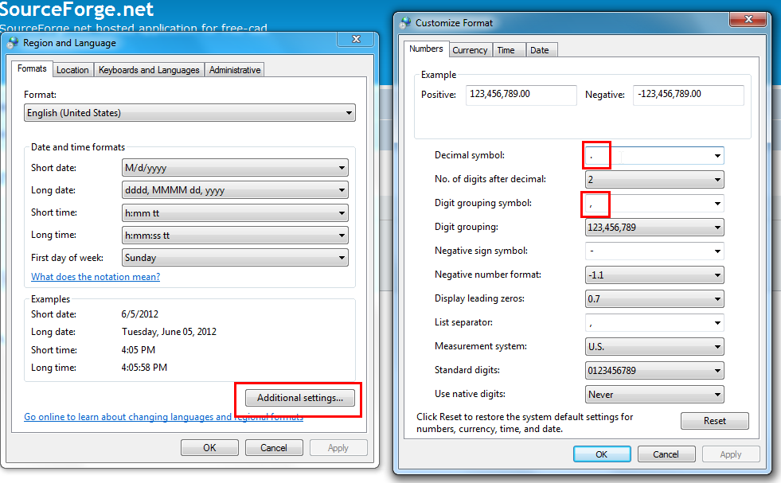

Frequently asked questions/es
La comunidad de FreeCAD proporciona muchos módulos y macros adicionales. Se pueden instalar fácilmente desde FreeCAD usando el  Administrador de complementos.
Administrador de complementos.
Instalación
¿Cuál es la forma más sencilla de instalar FreeCAD en mi sistema?
Si usa Windows o macOS, la forma más sencilla es dirigirse a la página de Descargar, donde encontrará varios paquetes listos para instalar. Si usa Debian, Fedora, Ubuntu u otras distribuciones, FreeCAD ya está incluido en los repositorios de software estándar y puede instalarlo fácilmente con el gestor de software. En Ubuntu, el equipo de FreeCAD también mantiene sus propios Repositorios PPA. Para obtener más detalles sobre la instalación, consulte la página de instalación correspondiente a su sistema operativo (Windows, Linux o Mac).
¿Cuáles son los requisitos previos para ejecutar FreeCAD?
A diferencia de la mayoría del software CAD 3D, FreeCAD funciona sin problemas incluso en los ordenadores más modestos; se sabe que funciona en procesadores Pentium IV e Intel Core2 Solo CPUs. Si su ordenador utiliza un sistema operativo actual, es probable que FreeCAD funcione. El único requisito previo es que su tarjeta gráfica o chipset sea compatible con OpenGL, preferiblemente con una versión no anterior a la 2.0. En caso de problemas, consulte la sección de solución de problemas de las preguntas frecuentes en este artículo.
Multihilo
El núcleo de modelado geométrico subyacente de FreeCAD, la biblioteca de terceros OpenCASCADE Technology (OCCT), en este momento solo tiene soporte parcial para multihilo. Consulte la página multihilo para más detalles.
¿Qué ocurre si quiero compilar FreeCAD yo mismo?
El código fuente de FreeCAD siempre está disponible en el repositorio de código fuente del proyecto. Compilar FreeCAD por su cuenta le permite usar las funciones más recientes en desarrollo, pero requiere algunos conocimientos de informática, aunque el procedimiento es bastante sencillo. El acceso al código fuente se explica aquí, y tenemos instrucciones detalladas para compilar en Windows, Linux y macOS.
FreeCAD me indica que falta algún módulo o aplicación
FreeCAD depende de muchos elementos para ofrecer todas sus funcionalidades. Los componentes principales necesarios suelen venir incluidos en la instalación de FreeCAD o proporcionados por el gestor de paquetes, por lo que normalmente no hay de qué preocuparse. Sin embargo, si instaló FreeCAD desde fuentes no oficiales o lo compiló usted mismo, es posible que falte algún componente, lo cual no es crítico para FreeCAD, pero podría provocar que algunas funciones no estén disponibles. Algunos formatos de archivo específicos, como Collada o DWG, también requieren componentes adicionales que no se incluyen en FreeCAD y que debe instalar por separado.
Todos esos componentes y la forma adecuada de instalarlos están listados en la página Módulos extra de python.
Solución de problemas
Problemas conocidos específicos del sistema operativo
Encuentre problemas conocidos específicos de su sistema operativo en este hilo del foro.
FreeCAD no se inicia en absoluto
Puede haber muchas razones para ello aunque la más probable es que falte alguna biblioteca. Intente iniciar FreeCAD desde una terminal (escriba freecad en la línea de comandos, o FreeCAD en algunos sistemas) para ver si aparece algún mensaje de error. Además, lea el resto de estas preguntas frecuentes, ya que puede proporcionarle más pistas para detectar la causa del problema. Si nada funciona, lo más conveniente es publicarlo en el foro [1]; seguro que alguien podrá ayudarle.
En algunos sistemas Windows XP antiguos, puede aparecer un mensaje de error como este: "La aplicación no se puede iniciar porque la configuración en paralelo es incorrecta. La reinstalación de la aplicación podría solucionar el problema". Esto se debe a que en su sistema faltan las bibliotecas de tiempo de ejecución de CRT o la versión instalada es demasiado antigua, ya que FreeCAD se vinculó con una versión más reciente. En este caso, debe instalar el Paquete redistribuible de Microsoft Visual C++, que encontrará en Microsoft. Consulte también el mensaje correspondiente en el foro [2].
FreeCAD se inicia normalmente, pero no se muestran todos los iconos, algunos de ellos son reemplazados por una 'X' negra
Algunas partes de FreeCAD dependen de un módulo externo de Python llamado Pivy. En Windows, pivy está incluido en la instalación de FreeCAD. En sistemas Debian/Ubuntu, el paquete python-pivy es parte de los repositorios de software estándar. En otros sistemas, por el momento, puede que tengas que compilar pivy tú mismo. Ten en cuenta que aunque algunas herramientas no están disponibles sin pivy, el resto de FreeCAD funciona normalmente.
Tengo problemas de visualización, la vista 3D no se comporta correctamente, hay basura cuando muevo/roto la vista, etc.
FreeCAD depende de OpenGL para mostrar contenidos 3D, y por lo tanto requiere un entorno OpenGL que funcione. En algunos sistemas, OpenGL no está activado por defecto, y puede que necesite instalar o actualizar sus drivers gráficos. Este problema ocurre con mayor frecuencia en sistemas Linux o en sistemas virtuales. Si está en un sistema basado en Linux, intente los siguientes pasos:
- verifique que su ordenador tiene una tarjeta gráfica con capacidad 3D.
- Teclee glxinfo en una ventana de terminal, y compruebe en la salida que Direct Rendering está configurado como "sí", y que el proveedor/renderizador/versión de OpenGL coincide con su tarjeta gráfica.
- Instale otro software basado en OpenGL (Blender, por ejemplo) y compruebe si se ejecuta y muestra correctamente.
FreeCAD se bloquea al iniciar
Un fallo puede indicar un error más grave o algún problema en la configuración. La mayoría de los fallos de arranque se producen por una de las dos razones siguientes:
Los controladores OpenGL no están instalados, o no funcionan correctamente
Esta es una causa muy común del problema. Los síntomas son simplemente que FreeCAD se bloquea al inicio, o cada vez que abres una vista 3D (por ejemplo creando un nuevo documento). Intente averiguar cuál es el chip gráfico de su ordenador y luego averigüe si soporta OpenGL (la mayoría de los chips recientes lo hacen), a continuación encuentre el controlador correcto e instálalo. Una buena forma de comprobar si OpenGL está disponible es intentar ejecutar otra aplicación OpenGL como blender.
Como consejo general, para obtener más información sobre los fallos con FreeCAD, trate de iniciarlo con el parámetro del programa --write-log. Esto creará el archivo FreeCAD.log en $XDG_CONFIG_HOME/FreeCAD (0.20 and above) o $HOME/.FreeCAD (0.19 and below) en Linux, o $HOME/Library/Preferences/FreeCAD en macOS, o %APPDATA%/FreeCAD en sistemas Windows.
En algunos casos excepcionales, es posible que tenga instalado un controlador gráfico incompatible con su tarjeta gráfica. Tuvimos un caso en el que el portátil del usuario tenía gráficos integrados Intel, pero se habían instalado controladores ATI. Consulte el hilo del foro en alemán FreeCAD startet nicht. Tras eliminar los archivos y reinstalar el controlador correcto, FreeCAD volvió a funcionar.
Alguna biblioteca, necesaria para FreeCAD, no está presente en su sistema, o no fue encontrada por FreeCAD
Puede haber dos caminos para este problema: o simplemente falta alguna librería, por lo que FreeCAD se negará a iniciarse, o la librería está ahí, pero es una versión más antigua que la que FreeCAD espera, por lo que se producirá un fallo cuando FreeCAD intente usar una característica que falta de esa librería. Un ejemplo común es cuando tiene Qt3 y Qt4 instalado en tu sistema, FreeCAD podría detectar Qt4 pero si su instalación de Qt no está configurada correctamente, algunas piezas de Qt3 podrían seguir siendo utilizadas, provocando fallos.
Por favor, revise el procedimiento de instalación de (Windows, Linux o Mac). Asegúrese de haber instalado todas las bibliotecas necesarias (en la mayoría de los sistemas Linux esto se hace automáticamente) y compruebe cuál es el número de versión mínimo para cada uno de los componentes.
Si todo parece correcto, describa el problema en el foro o en enviar un error. Si está trabajando en un sistema linux, es fácil hacer un rastreo inverso (backtrace) de depuración, que proporciona información muy útil sobre el fallo a los desarrolladores:
- En un terminal, escriba gdb freecad (asumiendo que el paquete gdb está instalado)
- Dentro de gdb, escriba run
- Después del bloqueo, escriba bt para obtener el seguimiento, que puede incluir en su informe de error.
FreeCAD se congela tras el arranque
Al iniciar FreeCAD la GUI aparece casi inmediatamente pero la GUI está congelada y la CPU está al 99%. Esto puede ocurrir en el escritorio KDE cuando se utiliza el tema Oxígeno. Es un error del tema Oxígeno y elegir otro tema debería solucionar este problema.
FreeCAD se bloquea al crear un nuevo documento o abrir un archivo
Si FreeCAD se bloquea al crear una nueva vista 3D, intente ejecutarlo desde una terminal. Si aparece un mensaje de error al producirse el bloqueo, que menciona Assertion Failed, y un nombre de componente que comienza con "So" (SoBase, SoFieldContainer, etc.), es muy probable, sobre todo si usa Linux, que FreeCAD esté intentando usar dos versiones diferentes de la biblioteca Coin, lo que provoca el bloqueo. Para verificar si ese es realmente el problema, pruebe lo siguiente:
- Localice el ejecutable de FreeCAD (normalmente en /usr/lib/FreeCAD/bin)
- Ejecute el comando ldd FreeCAD desde una terminal
- Anote la versión de la biblioteca libCoin.so que usa FreeCAD (por ejemplo, libCoin.so.60)
- Localice la biblioteca libSoQt.so (normalmente en /usr/lib)
- Ejecute ldd libSoQt.so y compruebe si se enlaza con la misma versión de Coin que FreeCAD
Si hay alguna diferencia, FreeCAD o SoQt deben recompilarse (es mejor recompilar el que usa la versión más antigua de Coin). Lo habitual es intentar contactar con los responsables del empaquetado de SoQt o FreeCAD y pedirles amablemente que consideren la posibilidad de recompilarlos.
Si desea realizar este paso usted mismo y no es posible recompilar SoQt porque interfiere con otras aplicaciones de su sistema, puede forzar la compilación de FreeCAD con la versión de Coin requerida mediante ./configure --with-coin=DIR. Sin embargo, debe asegurarse de que el paquete de desarrollo correcto de esta versión de Coin esté instalado.
FreeCAD se bloquea después de Editar → Alinear
Se produce un error de segmentación en vbo_save_playback_vertex_list(). Esto significa que la implementación de VBO en el controlador gráfico es incorrecta. Para evitar el almacenamiento en caché de las llamadas a OpenGL, puede intentar establecer la variable de entorno IV_SEPARATOR_MAX_CACHES=0 y reiniciar FreeCAD.
No puedo cambiar los valores numéricos en los paneles de propiedades de FreeCAD
{kind=link}

Es muy probable que tenga una configuración regional de Windows incorrecta. Compruebe si tiene el mismo símbolo para el separador decimal y el separador de dígitos en la configuración regional. Si es así, adapte la configuración del sistema para usar caracteres diferentes para el separador decimal y el separador de dígitos. Tenga en cuenta que no es obligatorio usar el punto como separador decimal. Sí es obligatorio usar símbolos diferentes en estas dos configuraciones.
FreeCAD estaba funcionando con normalidad y de repente ya no se inicia
Esto también puede ocurrir si tenía instalada una versión anterior de FreeCAD y actualizó a una versión más reciente. Durante este proceso, los archivos de configuración de FreeCAD podrían haberse dañado por algún motivo, y ahora FreeCAD ya no puede leerlos y no se inicia. La solución consiste simplemente en eliminar estos archivos de configuración para que FreeCAD los vuelva a crear la primera vez que se ejecute.
- En Windows: Abra el explorador de archivos y escriba %APPDATA%\FreeCAD como ruta de archivo. Una vez allí, elimine los archivos user.cfg y system.cfg.
- En Linux: Navegue a /home/USERNAME/.local/share/FreeCAD (0.20 and above) o /home/USERNAME/.FreeCAD (0.19 and below) y elimine los archivos user.cfg y system.cfg.
- En Mac: Navegue a /Users/USERNAME/Library/Preferences/FreeCAD y elimine los archivos user.cfg y system.cfg.
FreeCAD debería iniciarse ahora con normalidad, con todos sus ajustes restablecidos.
Existe una macro llamada Macro findConfigFiles que le ayudará a localizar sus archivos de configuración. Puede instalarla usando el Administrador de complementos en el menú Herramientas: Herramientas → Administrador de complementos → Macros → findConfigFiles. La macro encontrará la carpeta de sus archivos de configuración, la copiará al portapapeles e intentará abrirla con su explorador de archivos predeterminado. No modifique sus archivos ni su configuración.
Utilizando FreeCAD
¿Es FreeCAD realmente gratuito? ¿Incluso para uso comercial?
FreeCAD es software de código abierto (https://en.wikipedia.org/wiki/Open-source_software) y su uso es gratuito, tanto para uso personal como comercial, así como para su distribución, modificación e incluso su uso en aplicaciones de código cerrado. En resumen, puede hacer prácticamente lo que quiera con él. Consulte la página de Licencia para obtener más información.
¿Cómo puedo girar la vista 3D?
-
From the right mouse button
-
From the menu Edit → Preferences →
{kind=link}
{kind=link}
FreeCAD dispone de varios modos de navegación que se pueden configurar en el cuadro de diálogo de preferencias o modificar haciendo clic con el botón derecho en la vista 3D. Para obtener información detallada sobre los modos, consulte la página de configuración del ratón.
¿Qué puedo hacer con FreeCAD? ¿Por dónde empiezo?
Dirígete a la página Primeros pasos para obtener una descripción rápida de las herramientas que puedes usar. También hay una nueva sección Tutoriales con algunos recursos. La sección Centro de usuarios contiene información más detallada sobre los diferentes entornos de trabajo de FreeCAD. Ten en cuenta que, dado que FreeCAD es relativamente nuevo, su interfaz de usuario aún es muy básica y no incluye muchas herramientas. Sin embargo, ya tienes acceso a funcionalidades mucho más avanzadas en programación en Python.
¿Hay documentación para los recién llegados? ¿Cómo puedo aprender a usar FreeCAD?
Existe mucha documentación dispersa en diferentes lugares, tanto dentro como fuera del sitio web de FreeCAD. Puede comenzar con la página primeros pasos. La sección Tutoriales contiene muchas páginas de tutoriales especializados que le ayudarán a comenzar con los diferentes entornos de trabajo. El Manual de introducción es una guía general y completa de FreeCAD orientada al usuario. La sección Centro de ususarios de esta wiki enumera todas las páginas dirigidas a los usuarios finales. En sitios externos como Youtube, también encontrará una gran cantidad de videotutoriales creados por usuarios. Y, por último, pero no menos importante, el foro [3] contiene muchas respuestas a preguntas formuladas por otros nuevos usuarios.
Quiero importar/exportar datos en formato XYZ a/desde FreeCAD. ¿Cómo lo hago?
Consulte la página Cómo importar y exportar en FreeCAD. Es posible que allí encuentre respuesta a sus preguntas.
¿Dónde puedo encontrar soluciones alternativas para las funciones que FreeCAD actualmente no admite?
Consulte la página Soluciones alternativas.
Trabajar con la geometría de la pieza
¿Cómo extruyo objetos para convertirlos en sólidos? No obtengo el resultado correcto
La teoría es simple: las líneas (o alambres), al ser extruidas, forman caras. Las caras, al ser extruidas, forman sólidos.
Si extruye algo y el resultado no es un sólido, entonces ese algo no era una cara. Si tiene líneas y quieres extrui un sólido a partir de ellas, primero debe seleccionar líneas que formen un perímetro cerrado (seleccione varios objetos pulsando Ctrl), unirlas en un alambre (Actualización de borrador herramienta), y luego cree una cara a partir de ese alambre ( actualización de borrador herramienta). Listo, si todo salió bien, ahora puedes extruirlo para convertirlo en un sólido.
{kind=link}
Ahora bien, pueden existir muchos pequeños detalles que pueden llevarle a obtener un resultado incorrecto. La mejor manera de asegurarse es comprobar qué hay dentro del objeto que está extruyendo. El contenido de los objetos se puede explorar fácilmente con Python. Por ejemplo, si tiene un objeto llamado "Wire", podría escribir esto en la consola de Python:
obj = FreeCAD.ActiveDocument.Wire
shp = obj.Shape
print shp.Faces
print shp.Wires
if shp.Wires:
for w in shp.Wires:
print w.isClosed()
El código anterior recupera la forma de un objeto, muestra las caras y los cables que tiene (si los hay) y, si hay cables, imprime si esos cables están cerrados. Si no hay ninguna cara, no obtendrá un sólido. Si no hay ningún cable cerrado, no se convertirá en una cara. Si le interesa, hay más información sobre lo que puede comprobar con Python en la página part scripting. Si no puede unir varias líneas en un cable, la causa más probable es que sus extremos no se encuentren, debe haber pequeños huecos entre (algunas de) ellas. En ese caso, me temo que mi experiencia me dice que la forma más rápida sería redibujar un cable encima de ellas.
Mis operaciones booleanas fallan, o dan resultados extraños
Como todos los núcleos de modelado sólido, el núcleo de modelado geométrico Open CASCADE utilizado en FreeCAD para la geometría de piezas, aunque probablemente sea el mejor núcleo de geometría de código abierto disponible, tiene fallos y limitaciones. Las operaciones booleanas (fusión, sustracción, intersección) son complejas y a menudo dan resultados extraños. Esta es una limitación actual que no podemos solucionar de inmediato, por lo que la mejor opción es intentar obtener el resultado deseado modelando de otra manera. Por ejemplo, los problemas con primitivas como el cilindro a menudo se pueden resolver utilizando un círculo extruido. Las superficies coplanares entre piezas pueden causar problemas, al igual que la tangencia de superficies. Como regla general, si una forma no funciona, intente remodelarla de otra manera. En el 99% de los casos, al final logrará obtener el resultado deseado.
Para comprender mejor las operaciones booleanas, consulte estos artículos:
- https://wiki.mcneel.com/rhino/booleanfaq
- https://dev.opencascade.org/doc/overview/html/specification__boolean_operations.html#autotoc_md293
Cuando exporto (o visualizo) mi modelo, los agujeros se rellenan
No utilice Ctrl + A (Seleccionar todo) para exportar todo el árbol de jerarquía. Si el modelo consta de un solo elemento, intente seleccionar únicamente el elemento más reciente (normalmente el último) en el árbol de jerarquía.
Al crear un modelo en el Entorno de Trabajo de creación de Piezas, cada operación adopta la forma de la anterior y añade o elimina elementos, creando dependencias lineales entre ellas a medida que se crea el modelo. Por lo tanto, una operación de "Corte" no es solo el orificio en sí, sino la pieza completa con el corte. Por este motivo, el usuario generalmente solo debería tener visible el elemento (operación) más reciente en el árbol del modelo, ya que de lo contrario las fases del modelo se superponen y los orificios se rellenan con operaciones anteriores.
Para activar o desactivar la visibilidad de un objeto, selecciónelo en el árbol de jerarquía y pulse spacebar en su teclado. Normalmente, todos los elementos excepto el último en el árbol de jerarquía deberían estar atenuados y, por lo tanto, no visibles en la Vista 3D.
Mis objetos paramétricos se rompen cuando modifico sus bocetos base
Ha conocido el (infame) problema de nomenclatura topológica (PNT). Este problema puede seguir siendo importante para los nuevos usuarios de FreeCAD. Puede presentarse en todo FreeCAD, pero es más notorio al usar bocetos. La explicación es sencilla: al recalcular un boceto, las entidades geométricas (aristas, caras, etc.) se reconstruyen en un orden diferente, según la precedencia de las restricciones. Luego reciben un nombre diferente (Arista1, Arista2, Cara1, Cara2...). La mayoría de las operaciones posteriores dependen de estos nombres para identificar en qué subcomponente trabajan. Por lo tanto, cuando se reconstruye el boceto, las operaciones que se basan en dichos subcomponentes pueden ver su geometría base modificada repentinamente y dar un resultado erróneo.
introduced in 1.0: El código de mitigación de TNP está implementado, pero no elimina el problema por completo y los usuarios aún deben seguir las buenas prácticas que se enumeran a continuación:
- Tenga en cuenta que los bocetos son muy sensibles a este problema. Referenciar un borde específico de un boceto o una cara de un objeto creado a partir de él, como un PartDesign Pad, es peligroso, a menos que tenga la certeza de que estos bocetos no cambiarán con el tiempo o que el boceto sea muy simple. Un Pad creado a partir de un boceto rectangular simple, por ejemplo, probablemente sea seguro, ya que generará solo una cara, por lo que no habrá problemas de orden.
- Siempre que sea posible, utilice otros tipos de objetos, como Part o Draft. Estos objetos siempre se crean de la misma manera y, por lo tanto, sus componentes geométricos suelen seguir el mismo orden cada vez que se reconstruyen. Son mucho menos susceptibles a problemas de toponaming.
- Para adjuntar objetos adicionales a las caras de la geometría basada en bocetos, utilice Datum geometry. Estos "objetos auxiliares" invisibles no dependen de la geometría del boceto y, por lo tanto, se mantienen estables con el tiempo.
Contribución a FreeCAD
¡FreeCAD es un gran programa! ¿Cómo puedo ayudar?
Hay muchas maneras de contribuir al desarrollo de FreeCAD, incluso si no es programador. Aquí tienes algunas sugerencias:
- Comparta su opinión con los desarrolladores de FreeCAD: Siempre es útil saber qué piensan los usuarios, qué les pareció bien, qué les falta, etc. Deje un comentario en el foro [4] o envíe una solicitud en la sección de Problemas [5].
- Colabore con la documentación: La documentación disponible en este sitio a veces es muy limitada. Si encuentras algo que no esté bien documentado, ¡comparta tu conocimiento!
- Ayude a los nuevos usuarios: Participe en el foro y ayude a los principiantes a resolver preguntas básicas, como cómo instalar el programa, cómo añadir un cubo, etc.
- Traduzca la documentación a su idioma
- Traduzca FreeCAD a su idioma
- Escriba Tutoriales o grabe vídeotutoriales: Los tutoriales son una forma muy sencilla para que los principiantes aprendan un nuevo software. Si ha creado algo interesante, ¿por qué no compartirlo con otros?
- Contribuya con recursos y ejemplos: Todavía nos faltan buenos ejemplos en FreeCAD. Si ha creado algo útil, ¡compártalo con nosotros!
- Informe de errores: Es muy importante corregir todos los errores posibles. Si encuentra alguno, informe con la mayor claridad posible para que podamos entender exactamente qué ocurre.
- Anímase a programar en Python: ¿Nunca ha programado pero quiere intentarlo? Python es fácil. Lee nuestra Introducción_a_Python, ¡pero tenga cuidado, es una actividad adictiva y podría engancharse rápidamente!
- Consulte la página de Ayuda_a_FreeCAD para obtener más información sobre cómo contribuir.
¿Cómo puedo obtener permiso de edición en la wiki?
Consulte el párrafo Trabajar en la documentación de la página para obtener más detalles sobre cómo contribuir.
¿Participa FreeCAD en el Google Summer of Code?
Sí. Desde 2016, FreeCAD participa en Google Summer of Code. Consulte Google Summer of Code 2020 para obtener información sobre ediciones anteriores y Google Summer Of Code 2016 en el foro para ver el anuncio original.
Quiero empezar a traducir la wiki a mi propio idioma. ¿Qué puedo hacer?
Esta wiki alberga mucho contenido. El material más actualizado e interesante se encuentra en el Manual.
Consulte el párrafo de la página Traducir la documentación para obtener más detalles sobre cómo traducir la wiki.
¿Puedo comprar artículos promocionales?
FreeCAD no ofrece artículos promocionales que pueda comprar para apoyar el proyecto. Pero puede crear los suyos propios. Consulte nuestra página Artículos promocionales para obtener instrucciones.
Licencias, copias y reutilización
¿Tengo que pagar algo para usar FreeCAD?
No. FreeCAD es totalmente gratuito para usar, descargar, redistribuir o modificar. Es un software de código abierto (https://en.wikipedia.org/wiki/Open_source), publicado bajo los términos de la Licencia Pública General Reducida de GNU 2.1 (https://en.wikipedia.org/wiki/GNU_Lesser_General_Public_License), que le garantiza esas libertades y, aún más importante, le garantiza que nunca se le quitarán.
¿Puedo reutilizar alguna parte del diseño de FreeCAD o elementos del sitio web?
Claro. Todos los elementos gráficos (iconos, banners, etc.) de FreeCAD tienen licencia LGPL, al igual que el código de FreeCAD. Puede consultarlos en la página Diseño Gráfico. El sitio web es un sitio MediaWiki estándar; todos los elementos gráficos se pueden reutilizar libremente. Si le interesa saber cómo personalizar el software MediaWiki, como hicimos nosotros, consulte las páginas especiales de CSS y JavaScript comunes.
¿Puedo reutilizar partes de FreeCAD en otra aplicación?
Sí, puede usar las partes principales de FreeCAD en otras aplicaciones siempre que cumpla con los términos de la LGPL. Las bibliotecas de terceros, los Entornos de trabajo externos y las macros pueden estar sujetos a sus propios términos de licencia, por lo que le recomendamos consultar a sus autores. Encontrará más detalles en la página Licencia.
- Getting started
- Installation: Download, Windows, Linux, Mac, Additional components, Docker, AppImage, Ubuntu Snap
- Basics: About FreeCAD, Interface, Mouse navigation, Selection methods, Object name, Preferences, Workbenches, Document structure, Properties, Help FreeCAD, Donate
- Help: Tutorials, Video tutorials
- Workbenches: Std Base, Assembly, BIM, CAM, Draft, FEM, Inspection, Material, Mesh, OpenSCAD, Part, PartDesign, Points, Reverse Engineering, Robot, Sketcher, Spreadsheet, Surface, TechDraw, Test Framework
- Hubs: User hub, Power users hub, Developer hub